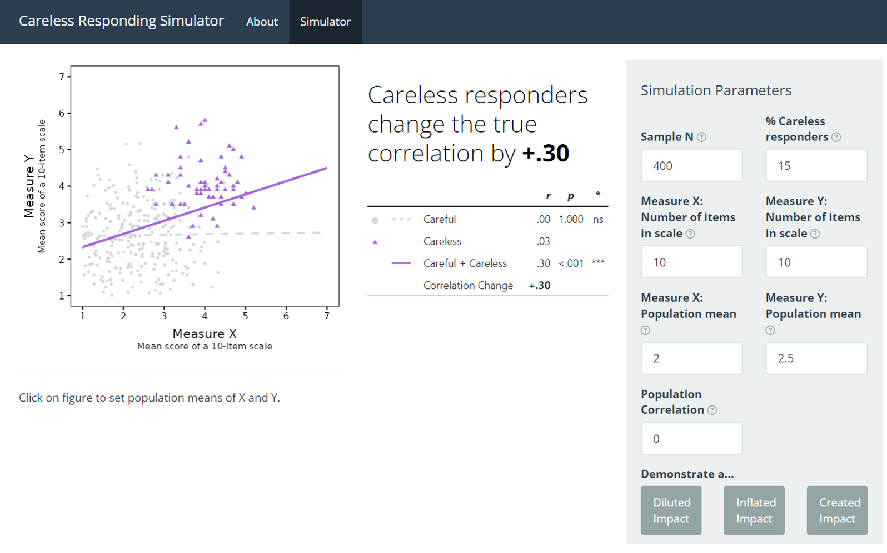
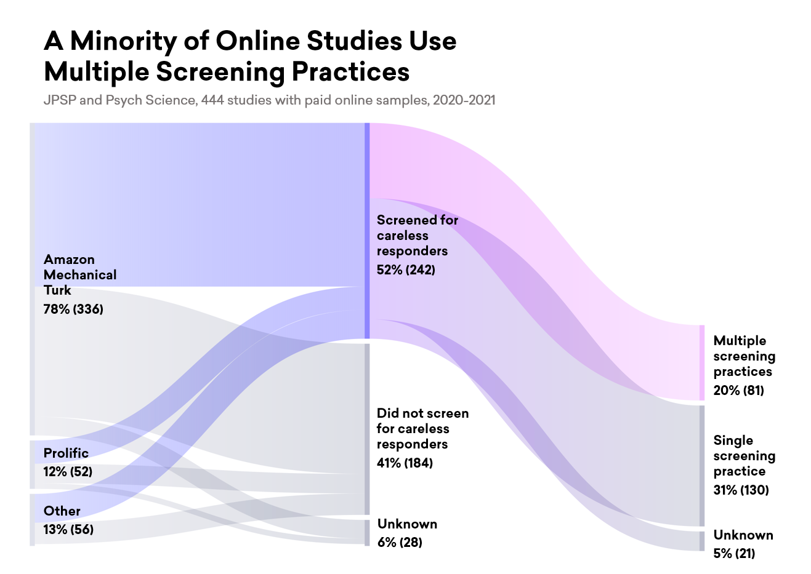

Research: Careless Responders
Overview
This research examines several aspects of careless responding—responding that is not attentive to the content of the questions or items being administered.
Key takeaways
On the whole, careless responding inflates effects rather than weakens them. Most researchers incorrectly assume the opposite, and in a survey of editors of leading psychology journals, we find that even these seasoned experts have incorrect intuitions.
Published peer-reviewed studies in high-impact journals often insufficiently screen for careless responding.
We provide an interactive web tool (a Shiny app) to explore and demonstrate careless responding examples in real time.
I played a key role in this project, overseeing or contributing to study design, analysis, data visualization, tool development, writing, and editing. Here, I showcase two contributions: the Shiny app and an alluvial data visualization.
Shiny app

While we write in the article on the effects of careless responding, this tool vividly demonstrates how careless responses can artificially inflate statistical correlations, providing an engaging, hands-on learning experience. To program this, I used R/Shiny/ggplot2, and the full code is available on Github. Click on button to launch.
Alluvial figure

My goal was to highlight the gap between the frequencies of good practices (stringent screening) and poor practices (less stringent or no screening). Alluvial plots are visualizations that are striking and beautiful. However, they are also often unclear, like visual puzzles that end up not communicating what is intended.
Here, I designed a custom color palette to highlight differences, with brighter, more vivid colors for good careless responding practices. The colors emphasize that only a minority of published studies in high impact journals used sufficiently stringent screening. To make this, I used RAWGraphs to make the base figure and the vector illustrator program InkScape for color gradients and text editing.
The Peer-Reviewed Article
For a deeper exploration of our findings and methodologies, the peer-reviewed article can be accessed in the journal Advances in Methods and Practices in Psychological Science:
Abstract: Contrary to long-standing conventional wisdom, failing to exclude data from carelessly responding participants on questionnaires or behavioral tasks will frequently result in false-positive or spuriously inflated findings. Despite prior publications demonstrating this disturbing statistical confound, it continues to be widely underappreciated by most psychologists, including highly experienced journal editors. In this article, we aim to comprehensively explain and demonstrate the severity and widespread prevalence of careless responding’s (CR) inflationary effects in psychological research. We first describe when and why one can expect to observe the inflationary effect of unremoved CR data in a manner accessible to early graduate or advanced undergraduate students. To this end, we provide an online simulator tool and instructional videos for use in classrooms. We then illustrate realistic magnitudes of the severity of unremoved CR data by presenting novel reanalyses of data sets from three high-profile articles: We found that many of their published effects would have been meaningfully, sometimes dramatically, inflated if they had not rigorously screened out CR data. To demonstrate the frequency with which researchers fail to adequately screen for CR, we then conduct a systematic review of CR screening procedures in studies using paid online samples (e.g., MTurk) published across two prominent psychological-science journals. These findings suggest that most researchers either did not conduct any kind of CR screening or conducted only bare minimal screening. To help researchers avoid publishing spuriously inflated findings, we summarize best practices to help mitigate the threats of CR data.